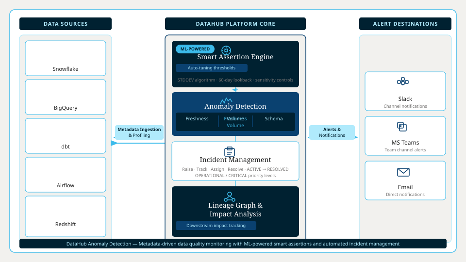

Detecting Anomalies Before They Hit Production
Your pipeline passed. Your dashboard broke anyway. DataHub catches freshness, volume, and schema anomalies before your users do.
- ML models learn your data patterns no threshold tuning required
- Covers freshness, volume, schema, and field-level anomalies
- Alerts route to Slack, Teams, or email with full context attached
20-minute tour. No sales script. Scoped to your stack.
See anomaly detection in action
A 20-minute tour scoped to your stack. No sales script.
What does detecting anomalies too late actually cost?
Reactive detection means your users find the problem first. That is a trust problem, a pipeline problem, and an on-call problem.
Broken dashboards, silent failures
Tables stop updating. No alert fires. A stakeholder flags it in a meeting. You spend the next hour tracing the lineage manually.
Volume drops no one catches
Row counts fall 40% overnight. Static thresholds miss it. Downstream models train on incomplete data before anyone notices.
Schema changes break queries
A column gets renamed upstream. Dependent reports fail. The incident lands in your queue, not the team that made the change.
Manual rules that never keep up
You write YAML assertions for every table. Data evolves. Thresholds go stale. The rules that should protect you become noise.
A better way to catch anomalies early
ML-powered detection across every dimension that matters, with lineage-aware impact analysis built in from the start.

ML detection learns your data patterns
Smart Assertions analyze 60 days of historical metrics to set dynamic thresholds automatically. Sensitivity controls let you tune predictions without touching a config file.
- Standard deviation algorithm adapts as your data evolves
- Confidence scores surface with every detected anomaly
- Known outliers are excluded from training automatically
Freshness, volume, and schema covered
One platform covers the anomaly types that matter most. Freshness checks catch stale tables. Volume assertions flag unexpected row count changes. Schema assertions block breaking changes before queries fail.
- Freshness: detect tables not updating on schedule
- Volume: catch spikes and drops in row counts
- Schema: flag breaking changes before downstream impact
Context-rich alerts reach the right owner
When an assertion fails, DataHub routes an alert to Slack, Teams, or email with the assertion details, failure metrics, and affected assets included. No digging required.
- Slack, Teams, and email notification channels supported
- Alerts include row counts, expected vs. actual values
- Incident status syncs from ACTIVE to RESOLVED automatically
See which pipelines are at risk
Lineage-aware impact analysis maps every detected anomaly to its downstream dependencies. Know which dashboards, models, and teams are affected before you start the investigation.
- Downstream dependencies surface at the moment of detection
- Link anomalies directly to affected assets and owners
- Confirm or reject detections to improve future predictions
How DataHub detects and resolves anomalies
Connect your existing sources, let DataHub learn what normal looks like, and get alerts before your users notice anything is wrong.
Step 1: Connect your sources
Step 2: Learn what normal looks like
Step 3: Alert, investigate, and resolve
Teams running Snowflake, dbt, and Looker have connected all three sources and activated Smart Assertions in a single session.
Built for enterprise-grade data reliability
DataHub supports the deployment models, connector coverage, and team-scale controls that platform engineering teams require.
Connector coverage across your stack
Assertion management at team scale
Anomaly feedback that improves over time
Trusted by modern data teams
Rated 4.5/5 on Gartner Peer Insights. Trusted by enterprise data teams in financial services, healthcare, and technology.
"Lineage works well and the upstream connections are useful. Looker and Snowflake ingestion were easy to implement."
"New-joiners are always impressed by the lineage features. Experienced developers appreciate the data quality checks."
You have seen how it works and what teams like yours have said. Here is what to expect when you take the tour.
Frequently asked questions about detecting anomalies with DataHub
Ready to stop detecting anomalies after the fact?
DataHub gives your team ML-powered detection across freshness, volume, and schema -- with lineage-aware impact analysis and alerts that reach the right owner before users notice anything is wrong.
You will speak with a DataHub engineer about your specific stack, not a generic walkthrough. The session runs 20 minutes and requires no preparation on your end.
20 minutes with a DataHub engineer. No preparation required.